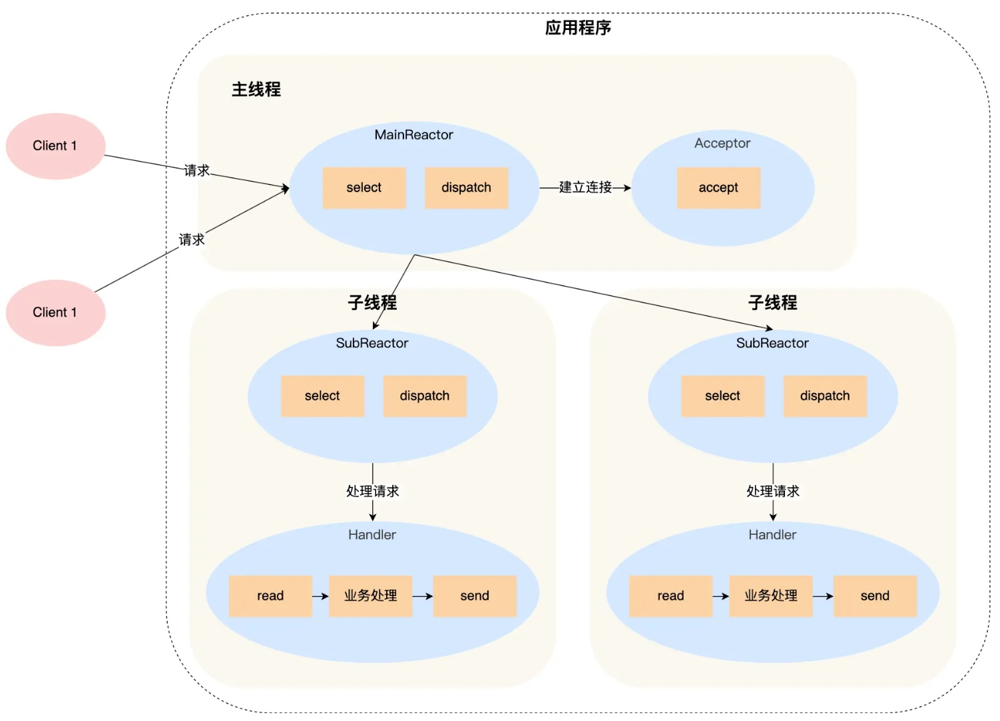
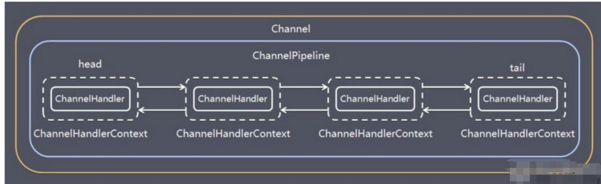

Netty高性能架构
网络线程模型
不同的线程模型，对程序的性能影响很大，目前存在的线程模型有：传统阻塞 I/O 模型、Reactor 模式、Proactor 模式。
Netty 线程模式主要是基于主从 Reactor 多线程模型（多 Reactor 多线程）做了一定改进。
传统阻塞I/O模型
传统阻塞式的最大特点是每个 client 的连接都需要独立的线程完成数据的输入→业务处理→数据返回。
它存在的两大问题是：
- 当并发数很大时，会创建大量的线程；
- 连接创建后如果当前线程没有数据可读，会一直阻塞在
read操作，造成资源浪费。
Reactor模式
Reactor 是一种高性能的网络模式，市面上常见的开源软件比如 Redis、Nginx、Netty 等都采用了这个方案。
Reactor 采用「资源复用」的思想解决 BIO 存在的两大问题：
- 不再为每个连接创建线程，而是创建线程池将连接分配给线程，一个线程可以处理多个连接的业务；
- 避免一个连接对应一个线程时，线程「read->业务处理->send」的处理流程在没有数据可读时会阻塞在
read上。采用 I/O 多路复用技术会用一个系统调用函数监听所有关心的连接，只有当连接上有数据时线程才发起读请求，而不用 read 来试探是否有数据。
单Reactor单线程
在应用程序中有三个主要的对象：
Reactor、Acceptor、Handler，Reactor 对象的作用是监听和分发事件、Acceptor 对象的作用是获取连接、Handler 对象的作用是处理业务。
Reactor 对象通过select（I/O多路复用接口）监听事件，收到事件后通过 dispatch 进行分发：如果是连接建立事件，则交由 Acceptor通过accept处理连接请求，然后创建一个 Handler 对象处理连接后的业务处理；如果不是连接建立事件，则交由对应的 Handler 来响应，Handler 通过「read->业务处理->send」完成完整业务流程。

单 Reactor 单线程的方案存在几个缺点：
- 服务端用一个线程通过多路复用搞定所有 IO 操作，虽然不存在进程通信、多线程竞争等问题，但无法充分利用多核 CPU 的性能；
- Handler 在进行业务处理时，整个进程无法处理其他连接事件，容易造成响应延迟和性能瓶颈。
- 线程意外终止或进入死循环造成的可靠性问题，不能接收和处理外部消息。
单 Reactor 单线程的方案只适用于业务处理速度非常快的场景，在 Redis6.0 之前采用的正是单 Reactor 单线程的方案，因为 Redis 业务处理主要是在内存中完成速度非常快，所以采用单线程模型。
单Reactor多线程
Reactor 对象通过select监听事件，收到时间后通过 dispatch 进行分发：如果建立连接请求，则 Acceptor 通过accept处理连接请求，然后创建 Handler 对象处理连接后的事件；如果不是连接请求，则由调用连接对应的 handler 来处理。
前面的步骤和单 Reactor 单线程是一致的，区别在于「多线程的 handler 只负责响应事件，不做具体的业务处理」，通过read读取数据后会发给后面的线程池中通过封装的 Processor(Worker)对象进行业务处理，处理完后将结果发送给主线程的 Handler 对象，Handler 通过 send 方法将响应结果发送给 client。
单 Reactor 多线程的方案优势在于能充分利用多核 CPU 来处理 handler 阻塞造成的性能瓶颈，但与此同时会出现多线程共享数据竞争的问题。
例如，线程池中子线程在完成业务处理后将结果传递给主线程的 Handler 进行 send，要避免对 Handler 共享资源的竞争问题就需要在操作之前加互斥锁，保证任意时间只能一个线程操作共享资源。
除此之外，单 Reactor 多线程模型虽然解决了多核 CPU 利用率的问题，但是单一 Reactor 对象所承担所有事件的监听和响应，而且只在主线程中运行，在面对高并发场景时容易变成性能瓶颈。
主从Reactor多线程
因为单一 Reactor 对象在主线程中运行可能存在性能瓶颈，所以可以让 Reactor 在多线程中运行。
Reactor 主线程 MainReactor 对象通过select监听「连接」事件，收到事件后通过 Acceptor 处理连接事件，进而 MainReactor 将连接分配给 SubReactor，subReactor 对象将连接加入到 select 继续进行监听，并创建 handler 进行事件处理；每当有新事件发生，subreactor 就调用对应的 handler 处理，handler 通过 read->业务处理->send 完成业务流程。

多 Reactor 模式下，主线程只负责接受新连接，子线程负责完成后续业务处理。而且主线程和子线程的交互很简单，主线程只需要把新连接传给子线程，子线程无须返回数据，直接可以在子线程中将处理结果发送给 client。
Netty 和 Nginx 都是采用了「主从 Reactor 多线程」的方案。
Netty模型
Netty 主要基于主从 Reactors 多线程模型，并做了一定改进。
Netty 抽象出两组线程池，BossGroup 专门负责接收客户端的连接，WorkerGroup 专门负责网络的读写。
BossGroup 和 WorkerGroup 类型都是NioEventLoopGroup。NioEventLoopGroup是事件循环组，每个组含有多个事件NioEventLoop是一个不断循环处理任务的线程，每个NioEventLoop都有一个 Selector 用于监听绑定在上面的 socket 网络通讯。
每个 BossNioEventLoop 循环执行的步骤：
- 轮询 accept 事件
- 处理 accept 事件，与 client 建立连接，生成 NioSocketChannel，并注册到某个 worker 的 NioEventLoop 上的 Selector
- 处理任务队列的任务，即 runAllTasks
每个 Worker NioEventLoop 循环执行的步骤：
- 轮询 read、write 事件
- 在 NIOSocketChannel 上处理 read 和 write I/O 事件
- 处理任务队列的任务，即 runAllTasks
Netty编程入门
对于 NettyServer 来说，如 Netty 的模型示意图上图所示，需要创建BossGroup和WorkerGroup两个线程组，BossGroup 负责处理连接请求、WorkerGroup 负责客户端的业务处理。
Bootstrap、ServerBootstrap
Bootstrap 是引导，Netty 应用通常由一个 Bootstrap 开始配置整个程序、串联组件。其中 Bootstrap 是客户端程序的启动引导类，ServerBootstrap 是服务端启动引导类。1
2
3
4
5
6
7
8
9
10
11
12
13
14
15// 创建服务器端的启动对象，配置参数
ServerBootstrap bootstrap = new ServerBootstrap();
// 配置
bootstrap.group(bossGroup, workerGroup) // 设置两个线程组
.channel(NioServerSocketChannel.class) // 使用NioSocketChannel作为服务器的通道
.option(ChannelOption.SO_BACKLOG, 128) // 设置线程队列得到连接个数
.childOption(ChannelOption.SO_KEEPALIVE, true) // 设置保持活动连接状态
.childHandler(new ChannelInitializer<SocketChannel>() { // 创建一个通道初始化对象（匿名对象）
// 给pipeline设置处理器
protected void initChannel(SocketChannel socketChannel) throws Exception {
System.out.println("客户socketChannel hashcode=" + socketChannel.hashCode());
socketChannel.pipeline().addLast(new NettyServerHandler());
}
}); // 给workerGroup的EventLoop对应的管道设置处理器Future、ChannelFuture
Netty 中所有的 IO 操作都是异步的，不能立刻得知消息是否被处理，但是可以通过 Future、ChannelFuture 注册一个监听，当操作执行成功或失败时会自动触发注册的监听事件。1
2
3
4
5
6
7
8
9
10
11
12
13
14
15
16
17// 绑定一个端口并且等待同步完成，生成一个channelFuture对象
// 启动服务器并绑定端口
ChannelFuture channelFuture = bootstrap.bind(6668).sync();
// 给ChannelFuture注册监听器，监控我们关心的事件
channelFuture.addListener(new ChannelFutureListener() {
public void operationComplete(ChannelFuture future) throws Exception {
if (channelFuture.isSuccess()) {
System.out.println("监听端口 6668 成功");
} else {
System.out.println("监听端口 6668 失败");
}
}
});
// 对关闭通道进行监听
channelFuture.channel().closeFuture().sync();由于 Netty 所有操作都是异步的，所以在一些需要同步阻塞完成才能继续执行程序的操作，就需要通过
sync()方法完成。
| 语句 | 含义 | 作用 |
|---|---|---|
| connect(…).sync() | 等待连接建立完成 | 等连接完成再做其他事 |
| closeFuture().sync() | 等待通道关闭事件完成 | 保证程序不退出直到通道被关闭 |
ChannelHandler
处理 I/O 事件或拦截 I/O 操作，并将其转发到 Handler 所在的 ChannelPipeline 业务处理链中的下一个处理程序。
我们通常需要自定义 Handler 去继承ChannelInboundHandlerAdapter，通过重写相应方法实现业务逻辑。ChannelOutboundHandlerAdapter 用来处理出站事件，比如
write,flush,connect,bind等。我们常常继承 ChannelInboundHandlerAdapter 的原因是最常见的业务需求往往是：处理客户端请求、接收和解析消息、执行业务逻辑并相应，这些都是入站逻辑。1
2
3
4
5
6
7
8// 通道就绪事件
public void channelActive(ChannelHandlerContext ctx)
// 通道读取数据事件
public void channelRead(ChannelHandlerContext ctx, Object msg);
// 数据读取完毕事件
public void channelReadComplete(ChannelHandlerContext ctx, Object evt)
// 通道发生异常事件
public void exceptionCaught(ChannelHandlerContext ctx, Throwable cause)上述方法在满足相应条件时会自动触发。
Pipeline、ChannelPipeline
一个 Channel 包含了一个 ChannelPipeline，而 ChannelPipeline 又维护了一个由 ChannelHandlerContext 组成的双向链表，每个 context 中又关联着一个 ChannelHandler。
入站事件和出站事件在同一个双向链表中，入站事件会从链表 head 往后传递到最后一个入站的 handler，出站事件会从链表 tail 往前传递到最前一个出站的 handler，两种类型的 handler 只处理自己类型的事件互不干扰。
1
2socketChannel.pipeline().addLast(new NettyServerHandler());
// socketChannel.pipeline().addFirst(new NettyServerHandler());ChannelHandlerContext
关联一个具体的事件处理器 ChannelHandler，同时保存 Channel 和 pipeline 相关的所有上下文信息方便对 ChannelHandler 进行调用。对于 handlercontext 方法的调用，通常用在 ChannelHandler 的业务逻辑重写方法中：
1
2
3
4
5
6
7
8
9// 关闭通道
ChannelFuture close()
// 获取通道和pipeline对象
Channel channel()
ChannelPipeline pipeline()
// 刷新缓冲区
ChannelHandlerContext flush()
// 写入并刷新
ChannelFuture writeAndFlush(Object var)EventLoopGroup、NioEventLoopGroup
EventLoopGroup 是一组 EventLoop 的抽象，Netty 为了更好的利用多核 CPU 资源，一般会有多个 EventLoop 同时工作，每个 EventLoop 维护着一个 Selector 实例。
通常一个服务端口 ServerSocketChannel 对应一个 Selector 和一个 EventLoop 线程，BossEventLoop 负责接收客户端的连接并将 SocketChannel 交给 WorkerEventLoopGroup 进行 IO 处理，EventLoopGroup 提供
next接口可以按照一定规则从组里获取一个 EventLoop 来处理任务。